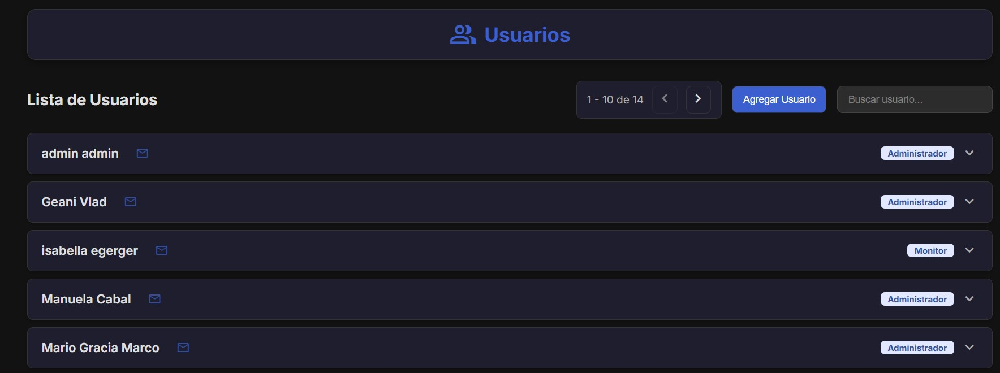
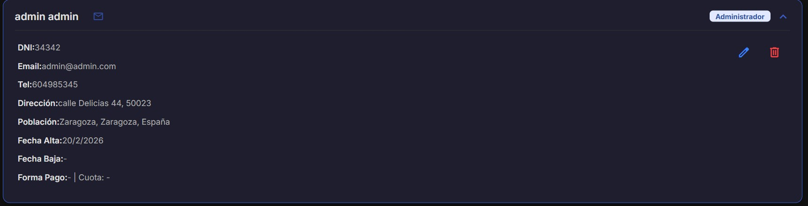
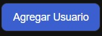
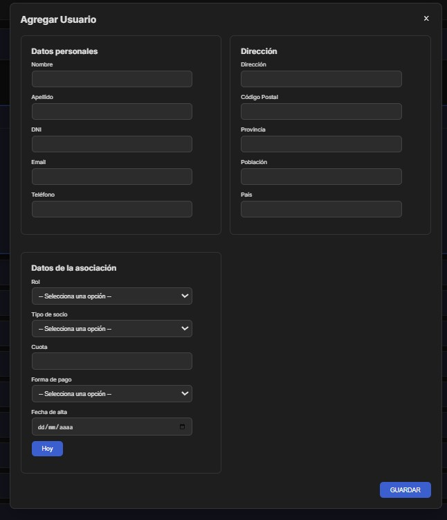
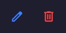
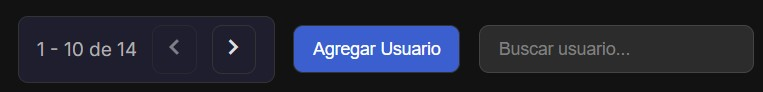
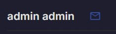
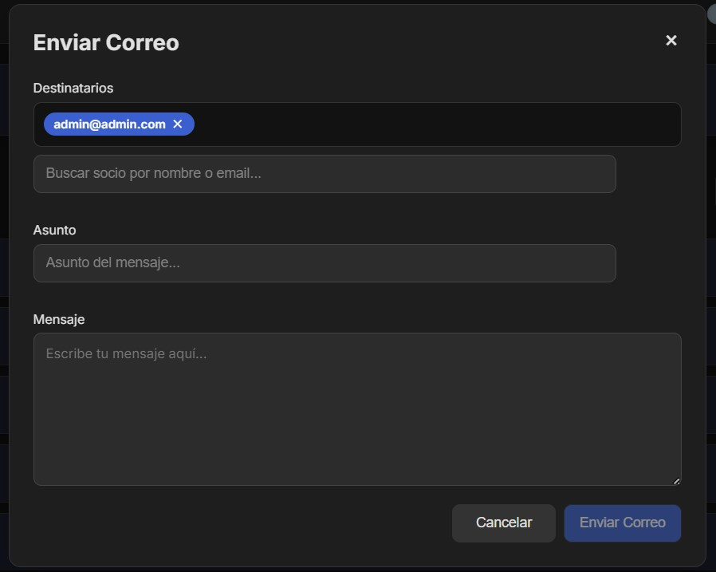

Gestión de Usuarios
En este apartado podemos ver todos los usuarios que tiene la asociacion, pueden ir desde, los propios administradores, socios, colaboradores, etc.


Podemos abrir un desplegable de cada unsuario para poder ver toda la informacion del usuario en cuestion, además, podemos editar el usuario concreto y eliminarlo en caso de que ya no forme parte de la asociacion.


Este es el formualario para agregar usuarios nuevos

Estos son los botones que nos permiten editar y eliminar

Tenemos un buscador para buscar usuarios. Se pueden buscar por cualquier dato
Las paginas estás organizadas de 10 en 10, por lo que tenemos dos pestañas que nos permiten navegar entre paginas

Este boton nos permite enviar un correo electrónico desde la aplicación a los usuarios de forma individual

Este es el formulario para enviar correos electrónicos
← Volver al Inicio